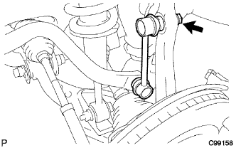
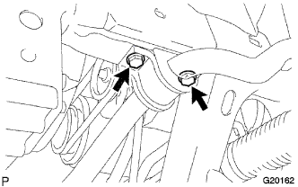
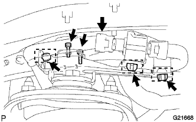
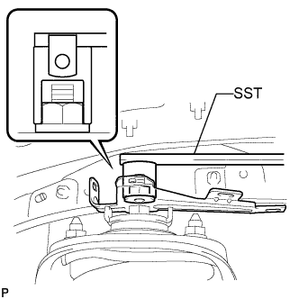
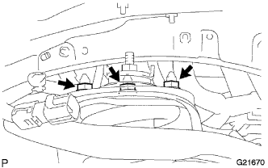

ПЕРЕДНИЙ АМОРТИЗАТОР > СНЯТИЕ |
| 1. СНИМИТЕ ПЕРЕДНЕЕ КОЛЕСО |
| 2. СНИМИТЕ НИЖНЮЮ НАКЛАДКУ ПЕРЕДНЕГО БАМПЕРА |
Освободите фиксатор, выверните 5 болтов и снимите нижнюю облицовку переднего бампера.
| 3. СНИМИТЕ ЗАЩИТУ КАРТЕРА ДВИГАТЕЛЯ № 1 В СБОРЕ |
 |
Выверните 4 болта.
Отсоедините защиту картера двигателя от кузова автомобиля, как показано на рисунке.
| 4. СНИМИТЕ СКОБУ ЭЛЕМЕНТА ПЕРЕДНЕЙ ПОДВЕСКИ В СБОРЕ |
 |
Выверните 6 болтов и снимите 2 скобы элемента подвески с передней рамы в сборе.
| 5. СНИМИТЕ КОНЦЕВОЙ КРОНШТЕЙН ПЕРЕДНЕГО СТАБИЛИЗАТОРА (для моделей с KDSS) |
 |
Выверните 4 болта и снимите 2 кронштейна с нижнего рычага.
| 6. СНИМИТЕ ПЕРЕДНИЙ СТАБИЛИЗАТОР ПОПЕРЕЧНОЙ УСТОЙЧИВОСТИ (для моделей с KDSS) |
 |
Выверните 4 болта и снимите 2 нижних кронштейна переднего стабилизатора и штангу переднего стабилизатора.
Снимите 2 втулки стоек переднего стабилизатора и втулки нижних кронштейнов переднего стабилизатора со штанги переднего стабилизатора.
| 7. ОТСОЕДИНИТЕ ЛЕВУЮ СТОЙКУ ПЕРЕДНЕГО СТАБИЛИЗАТОРА В СБОРЕ (для моделей без KDSS) |
|  |
Отверните гайку и отсоедините стойку стабилизатора от поворотного кулака.
| 8. ОТСОЕДИНИТЕ ПРАВУЮ СТОЙКУ ПЕРЕДНЕГО СТАБИЛИЗАТОРА В СБОРЕ (для моделей без KDSS) |
| 9. СНИМИТЕ ЛЕВЫЙ КРОНШТЕЙН ПЕРЕДНЕГО СТАБИЛИЗАТОРА № 1 (для моделей без KDSS) |
|  |
Выверните 2 болта и снимите левый кронштейн переднего стабилизатора № 1.
| 10. СНИМИТЕ ПРАВЫЙ КРОНШТЕЙН ПЕРЕДНЕГО СТАБИЛИЗАТОРА № 1 (для моделей без KDSS) |
| 11. СНИМИТЕ ПЕРЕДНИЙ СТАБИЛИЗАТОР ПОПЕРЕЧНОЙ УСТОЙЧИВОСТИ (для моделей без KDSS) |
| 12. СНИМИТЕ ПЕРЕДНИЙ АМОРТИЗАТОР С ЦИЛИНДРИЧЕСКОЙ ВИНТОВОЙ ПРУЖИНОЙ (для моделей с пневматической подвеской) |
|  |
Открепите 3 зажима и отсоедините разъем.
С помощью шестигранной головки 4 мм выверните 2 болта и снимите привод амортизатора.
|  |
Используя SST, отверните гайку и снимите кронштейн.
 |
Снимите болт, гайку и шайбу.
|  |
Отверните 3 гайки на верхней стороне переднего амортизатора с цилиндрической винтовой пружиной.
Снимите передний амортизатор с цилиндрической винтовой пружиной.
| 13. СНИМИТЕ ПЕРЕДНИЙ АМОРТИЗАТОР С ЦИЛИНДРИЧЕСКОЙ ВИНТОВОЙ ПРУЖИНОЙ (для моделей без пневматической подвески) |
|
Снимите болт, гайку и шайбу.
 |
Отверните 3 гайки на верхней стороне переднего амортизатора с цилиндрической винтовой пружиной.
Снимите передний амортизатор с цилиндрической винтовой пружиной.